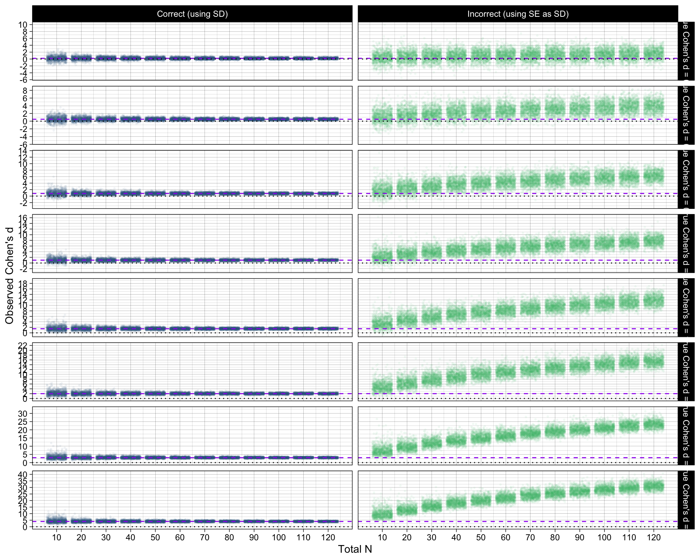
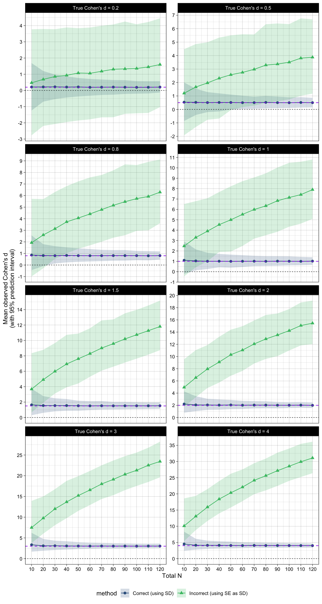
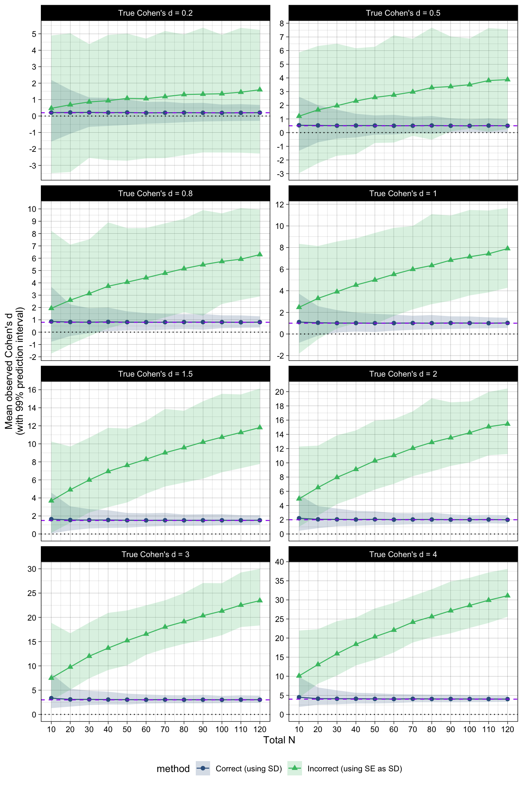
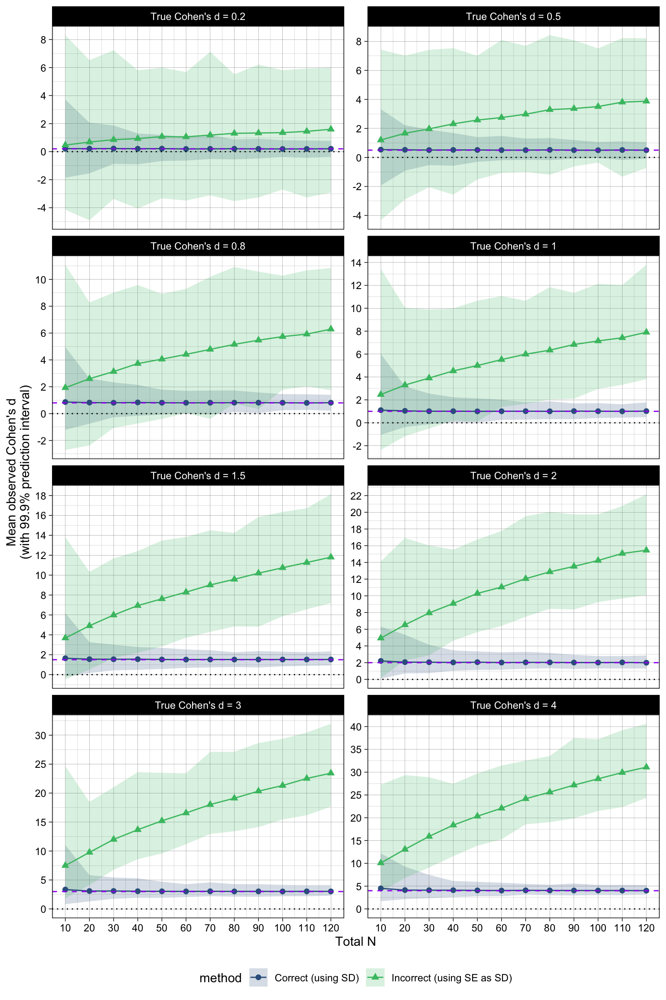
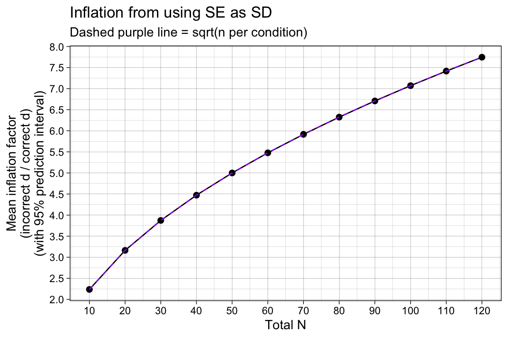
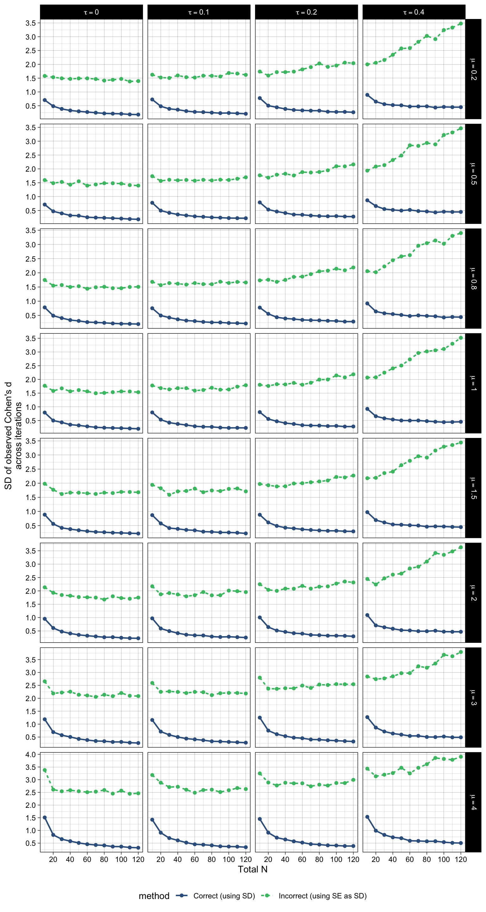
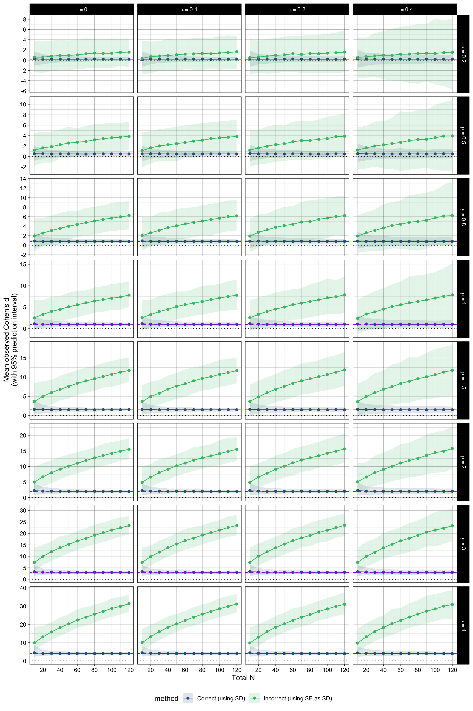
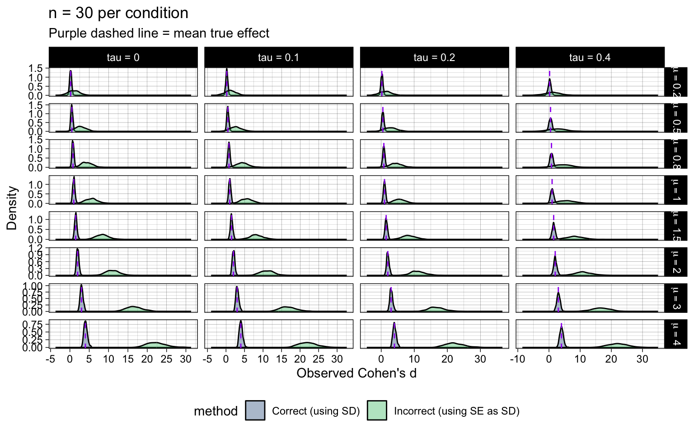

# dependencies
library(tidyr)
library(dplyr)
library(furrr)
library(forcats)
library(ggplot2)
library(scales)
library(patchwork)
# set up parallelization
plan(multisession)13 Confusing SEs and SDs when computing Cohen’s d ✎ Rough draft
13.1 The problem
Cohen’s d is defined as the difference in means divided by the pooled Standard Deviation (SD):
\[d = \frac{\bar{X}_1 - \bar{X}_2}{SD_{pooled}}\]
When extracting values from published papers — for example, for use in meta-analysis or power analysis — researchers sometimes mistakenly use the Standard Error (SE) instead of the SD. Since \(SE = SD / \sqrt{n}\), this substitution inflates Cohen’s d by a factor of approximately \(\sqrt{n}\). The larger the sample size, the worse the inflation.
This simulation demonstrates the consequences.
13.2 References
The existing literature on SE/SD confusion falls into two broad categories: (a) documenting the prevalence of SE misuse in primary research articles, which creates the upstream conditions for the problem, and (b) documenting the downstream consequences when these misreported values are extracted and used in meta-analyses. The simulation below complements this work by isolating and quantifying the mechanical relationship between sample size, true effect size, and the degree of inflation — making explicit why the error matters and how much it distorts results under controlled conditions.
13.2.1 Prevalence of SE/SD misuse in primary research
These papers document how frequently primary research articles report SEs where SDs are appropriate, creating the conditions under which downstream errors occur.
- Altman, D. G., & Bland, J. M. (2005). Standard deviations and standard errors. BMJ, 331, 903. https://doi.org/10.1136/bmj.331.7521.903
- Classic tutorial clarifying the distinction between SD and SE. Found that 14% of articles in a BMJ sample failed even to identify which was being reported.
- Barde, M. P., & Barde, P. J. (2012). What to use to express the variability of data: Standard deviation or standard error of mean? Perspectives in Clinical Research, 3(3), 113–116. https://doi.org/10.4103/2229-3485.100662
- Tutorial noting that authors sometimes prefer SEM because it is smaller, making data appear less variable — an incentive that sustains the problem.
- Ko, W.-R., Hung, W.-T., Chang, H.-C., & Lin, L.-Y. (2014). Inappropriate use of standard error of the mean when reporting variability of study samples: A critical evaluation of four selected journals of obstetrics and gynecology. Taiwanese Journal of Obstetrics & Gynecology, 53(1), 26–29. https://doi.org/10.1016/j.tjog.2013.04.035
- Found 13.6% of articles across four OB/GYN journals inappropriately used SEM to describe sample variability.
- Nagele, P. (2003). Misuse of standard error of the mean (SEM) when reporting variability of a sample. A critical evaluation of four anaesthesia journals. British Journal of Anaesthesia, 90(4), 514–516. https://doi.org/10.1093/bja/aeg087
- Found 23% of articles in four anaesthesia journals inappropriately used SEM to describe sample variability.
- Wullschleger, M., Aghlmandi, S., Engel, M., & Zwahlen, M. (2014). High incorrect use of the standard error of the mean (SEM) in original articles in three cardiovascular journals evaluated for 2012. PLOS ONE, 9(10), e110364. https://doi.org/10.1371/journal.pone.0110364
- Found 64% of articles in three top cardiovascular journals contained at least one instance of incorrect SEM use — the highest prevalence documented.
13.2.2 Downstream consequences for meta-analysis
These papers document what happens when SE values are mistakenly treated as SDs during effect size extraction for meta-analysis.
- Gallardo-Gomez, D., Richardson, R., & Dwan, K. (2024). Standardized mean differences in meta-analysis: A tutorial. Cochrane Evidence Synthesis and Methods, 2(3), e12047. https://doi.org/10.1002/cesm.12047
- Cochrane tutorial on computing standardized mean differences, including guidance on correctly distinguishing SE from SD when extracting data from primary studies.
- Kadlec, D., Sainani, K. L., & Nimphius, S. (2023). With great power comes great responsibility: Common errors in meta-analyses and meta-regressions in strength & conditioning research. Sports Medicine, 53(2), 313–325. https://doi.org/10.1007/s40279-022-01766-0
- Found 85% of meta-analyses in strength and conditioning contained at least one statistical error. 45% contained effect sizes inflated by the SE/SD mix-up, and 60% of all effect sizes above 3.0 were attributable to this specific error.
- Kanellopoulou, A., et al. (2025). Common statistical errors in systematic reviews: A tutorial. Cochrane Evidence Synthesis and Methods. https://doi.org/10.1002/cesm.70013
- Cochrane-affiliated tutorial identifying SE/SD confusion as one of the most common statistical errors in systematic reviews.
- Sandercock, G. (2024). The standard error/standard deviation mix-up: Potential impacts on meta-analyses in sports medicine. Sports Medicine, 54(6), 1723–1732. https://doi.org/10.1007/s40279-023-01989-9
- Re-analysed a highly cited meta-analysis and found SE/SD mix-ups in 9 of 16 effect sizes. The pooled SMD dropped from 1.46 to 0.54 after correction — nearly threefold — and one comparison lost statistical significance entirely.
13.3 Simulation 1
# functions for simulation
generate_data <- function(n_per_condition,
mean_control,
mean_intervention,
sd) {
data_control <-
tibble(condition = "control",
score = rnorm(n = n_per_condition, mean = mean_control, sd = sd))
data_intervention <-
tibble(condition = "intervention",
score = rnorm(n = n_per_condition, mean = mean_intervention, sd = sd))
data_combined <-
bind_rows(data_control,
data_intervention) |>
mutate(condition = factor(condition, levels = c("intervention", "control")))
return(data_combined)
}
analyse <- function(data) {
# compute group summaries
group_stats <- data |>
group_by(condition) |>
summarize(mean_score = mean(score),
sd_score = sd(score),
n = n(),
.groups = "drop")
mean_diff <- group_stats$mean_score[group_stats$condition == "intervention"] -
group_stats$mean_score[group_stats$condition == "control"]
n <- group_stats$n[1] # same n per condition
# pooled SD
sd_pooled <- sqrt(mean(group_stats$sd_score^2))
# SE of each group mean
se_pooled <- sqrt(mean((group_stats$sd_score / sqrt(group_stats$n))^2))
# Cohen's d computed correctly (using SD)
cohens_d_correct <- mean_diff / sd_pooled
# Cohen's d computed incorrectly (using SE as if it were SD)
cohens_d_se_as_sd <- mean_diff / se_pooled
results <- tibble(
cohens_d_correct = cohens_d_correct,
cohens_d_se_as_sd = cohens_d_se_as_sd
)
return(results)
}
# simulation parameters
experiment_parameters <- expand_grid(
n_per_condition = seq(from = 5, to = 60, by = 5),
true_effect = c(0.2, 0.5, 0.8, 1, 1.5, 2, 3, 4),
sd = 1,
iteration = 1:1000
) |>
mutate(mean_control = 0,
mean_intervention = true_effect * sd) # so that true Cohen's d = true_effect
# set seed
set.seed(43)
# run simulation
simulation <- experiment_parameters |>
mutate(generated_data = future_pmap(.l = list(n_per_condition = n_per_condition,
mean_control = mean_control,
mean_intervention = mean_intervention,
sd = sd),
.f = generate_data,
.progress = TRUE,
.options = furrr_options(seed = TRUE))) |>
mutate(results = future_pmap(.l = list(data = generated_data),
.f = analyse,
.progress = TRUE,
.options = furrr_options(seed = TRUE)))13.3.1 Observed Cohen’s d by sample size
simulation_results <- simulation |>
unnest(results) |>
pivot_longer(cols = c(cohens_d_correct, cohens_d_se_as_sd),
names_to = "method",
values_to = "cohens_d") |>
mutate(method = ifelse(method == "cohens_d_correct",
"Correct (using SD)",
"Incorrect (using SE as SD)"),
method = factor(method, levels = c("Correct (using SD)",
"Incorrect (using SE as SD)")),
true_effect_label = paste("True Cohen's d =", true_effect))
simulation_results |>
ggplot(aes(n_per_condition * 2, cohens_d, color = method)) +
geom_jitter(alpha = 0.05, size = 0.5) +
geom_hline(aes(yintercept = true_effect), linetype = "dashed", color = "purple") +
geom_hline(yintercept = 0, linetype = "dotted") +
scale_x_continuous(breaks = breaks_pretty(n = 10),
name = "Total N") +
scale_y_continuous(breaks = breaks_pretty(n = 10),
name = "Observed Cohen's d") +
theme_linedraw() +
scale_color_viridis_d(begin = 0.3, end = 0.7) +
facet_grid(true_effect_label ~ method, scales = "free_y") +
theme(legend.position = "none")
- The left panels show that when Cohen’s d is computed correctly using the SD, the observed values cluster around the true effect (purple dashed line) regardless of sample size. Larger samples simply produce less variable estimates.
- The right panels show that when the SE is mistakenly used as the SD, the observed Cohen’s d grows dramatically with sample size. This is because \(SE = SD / \sqrt{n}\), so dividing by SE instead of SD inflates d by a factor of \(\sqrt{n}\).
13.3.2 Mean observed Cohen’s d by sample size and method
13.3.2.1 95% Prediction Intervals
simulation_summary <- simulation_results |>
group_by(n_per_condition, true_effect, true_effect_label, method) |>
summarize(mean_cohens_d = mean(cohens_d),
pi_lower = quantile(cohens_d, 0.025),
pi_upper = quantile(cohens_d, 0.975),
.groups = "drop")
ggplot(simulation_summary, aes(n_per_condition * 2, mean_cohens_d,
color = method, fill = method, shape = method)) +
geom_ribbon(aes(ymin = pi_lower, ymax = pi_upper), alpha = 0.2, color = NA) +
geom_line() +
geom_point(size = 2) +
geom_hline(aes(yintercept = true_effect), linetype = "dashed", color = "purple") +
geom_hline(yintercept = 0, linetype = "dotted") +
scale_x_continuous(breaks = breaks_pretty(n = 10),
name = "Total N") +
scale_y_continuous(breaks = breaks_pretty(n = 10),
name = "Mean observed Cohen's d\n(with 95% prediction interval)") +
theme_linedraw() +
scale_color_viridis_d(begin = 0.3, end = 0.7) +
scale_fill_viridis_d(begin = 0.3, end = 0.7) +
facet_wrap(~ true_effect_label, scales = "free_y", ncol = 2) +
theme(legend.position = "bottom")
- The correct method (using SD) produces unbiased estimates of Cohen’s d at all sample sizes.
- The incorrect method (using SE as SD) produces estimates that scale with sample size. A study with N = 200 (100 per condition) and a true d of 0.5 would be misestimated as approximately d = 5 — a tenfold inflation.
13.3.2.2 99% Prediction Intervals
simulation_summary2 <- simulation_results |>
group_by(n_per_condition, true_effect, true_effect_label, method) |>
summarize(mean_cohens_d = mean(cohens_d),
pi_lower = quantile(cohens_d, 0.005),
pi_upper = quantile(cohens_d, 0.995),
.groups = "drop")
ggplot(simulation_summary2, aes(n_per_condition * 2, mean_cohens_d,
color = method, fill = method, shape = method)) +
geom_ribbon(aes(ymin = pi_lower, ymax = pi_upper), alpha = 0.2, color = NA) +
geom_line() +
geom_point(size = 2) +
geom_hline(aes(yintercept = true_effect), linetype = "dashed", color = "purple") +
geom_hline(yintercept = 0, linetype = "dotted") +
scale_x_continuous(breaks = breaks_pretty(n = 10),
name = "Total N") +
scale_y_continuous(breaks = breaks_pretty(n = 10),
name = "Mean observed Cohen's d\n(with 99% prediction interval)") +
theme_linedraw() +
scale_color_viridis_d(begin = 0.3, end = 0.7) +
scale_fill_viridis_d(begin = 0.3, end = 0.7) +
facet_wrap(~ true_effect_label, scales = "free_y", ncol = 2) +
theme(legend.position = "bottom")
13.3.2.3 99.9% Prediction Intervals
simulation_summary3 <- simulation_results |>
group_by(n_per_condition, true_effect, true_effect_label, method) |>
summarize(mean_cohens_d = mean(cohens_d),
pi_lower = quantile(cohens_d, 0.0005),
pi_upper = quantile(cohens_d, 0.9995),
.groups = "drop")
ggplot(simulation_summary3, aes(n_per_condition * 2, mean_cohens_d,
color = method, fill = method, shape = method)) +
geom_ribbon(aes(ymin = pi_lower, ymax = pi_upper), alpha = 0.2, color = NA) +
geom_line() +
geom_point(size = 2) +
geom_hline(aes(yintercept = true_effect), linetype = "dashed", color = "purple") +
geom_hline(yintercept = 0, linetype = "dotted") +
scale_x_continuous(breaks = breaks_pretty(n = 10),
name = "Total N") +
scale_y_continuous(breaks = breaks_pretty(n = 10),
name = "Mean observed Cohen's d\n(with 99.9% prediction interval)") +
theme_linedraw() +
scale_color_viridis_d(begin = 0.3, end = 0.7) +
scale_fill_viridis_d(begin = 0.3, end = 0.7) +
facet_wrap(~ true_effect_label, scales = "free_y", ncol = 2) +
theme(legend.position = "bottom")
13.3.3 Inflation factor by sample size
inflation <- simulation |>
unnest(results) |>
mutate(inflation_factor = cohens_d_se_as_sd / cohens_d_correct) |>
group_by(n_per_condition) |>
summarize(mean_inflation = mean(inflation_factor, na.rm = TRUE),
pi_lower = quantile(inflation_factor, 0.025, na.rm = TRUE),
pi_upper = quantile(inflation_factor, 0.975, na.rm = TRUE),
.groups = "drop")
ggplot(inflation, aes(n_per_condition * 2, mean_inflation)) +
geom_ribbon(aes(ymin = pi_lower, ymax = pi_upper), alpha = 0.2) +
geom_line() +
geom_point(size = 2) +
geom_line(aes(y = sqrt(n_per_condition)), linetype = "dashed", color = "purple") +
scale_x_continuous(breaks = breaks_pretty(n = 10),
name = "Total N") +
scale_y_continuous(breaks = breaks_pretty(n = 10),
name = "Mean inflation factor\n(incorrect d / correct d)\n(with 95% prediction interval)") +
theme_linedraw() +
ggtitle("Inflation from using SE as SD",
subtitle = "Dashed purple line = sqrt(n per condition)")
- The inflation factor closely tracks \(\sqrt{n_{per\ condition}}\) (purple dashed line), confirming the mathematical relationship: dividing by SE instead of SD inflates Cohen’s d by \(\sqrt{n}\).
- At n = 10 per condition, the inflation is ~3x. At n = 100 per condition, it’s ~10x.
13.3.4 Implications from Simulation 1
- Always verify whether a reported value is an SD or SE before using it to compute Cohen’s d. Papers sometimes label these ambiguously (e.g., “mean ± error”).
- The consequences of this confusion are not constant — they scale with sample size, meaning that larger, better-powered studies are more distorted by this error, not less.
- In meta-analysis, this error could cause a single large study to dominate the pooled estimate with a massively inflated effect size.
13.4 Simulation 2: SE/SD confusion in the context of between-study heterogeneity
Simulation 1 used fixed true effects — every simulated study had the same population Cohen’s d. But real meta-analyses involve heterogeneity: true effects vary across studies due to differences in populations, interventions, outcome measures, and so on.
This raises a practical diagnostic question: when a meta-analyst encounters unusually large d values, could they be attributable to genuine between-study heterogeneity rather than a coding error? This simulation quantifies both sources of variation to show that SE/SD confusion produces inflation that dwarfs even the largest realistic heterogeneity.
13.4.1 Parameterizing heterogeneity with \(\tau\)
Between-study heterogeneity is parameterized here as \(\tau\) — the standard deviation of the distribution of true effects across studies. Each study’s true Cohen’s d is drawn from \(\mathcal{N}(\mu, \tau)\).
We use \(\tau\) rather than \(I^2\) or \(H^2\) because \(\tau\) is a property of the population of effects, independent of within-study sample size. Since this simulation also varies sample size, \(I^2\) and \(H^2\) would shift even with constant heterogeneity, confounding the interpretation. \(\tau\) is the cleanest parameterization for this design.
The chosen \(\tau\) values are based on van Erp et al. (2017), who estimated between-study heterogeneity for 705 meta-analyses reported in Psychological Bulletin from 1990–2013. For standardized mean differences, they found a median \(\tau \approx 0.20\), with an interquartile range of approximately 0.10–0.35 and a 90th percentile around 0.50. These estimates are broadly consistent with IntHout et al. (2015) on Cochrane reviews and Rhodes et al. (2015) on medical research.
| Level | \(\tau\) | Basis |
|---|---|---|
| None | 0.00 | Baseline; reproduces Simulation 1 |
| Small | 0.10 | ~25th percentile of empirical distribution |
| Typical | 0.20 | Median from van Erp et al. (2017) |
| Large | 0.40 | ~85th–90th percentile; high but plausible |
13.4.2 References for heterogeneity estimates
- van Erp, S., Verhagen, J., Grasman, R. P. P. P., & Wagenmakers, E.-J. (2017). Estimates of between-study heterogeneity for 705 meta-analyses reported in Psychological Bulletin from 1990–2013. Journal of Open Psychology Data, 5(1), 4. https://doi.org/10.5334/jopd.33
- IntHout, J., Ioannidis, J. P. A., Rovers, M. M., & Goeman, J. J. (2015). Plea for routinely presenting prediction intervals in meta-analysis. BMJ Open, 5(7), e007632. https://doi.org/10.1136/bmjopen-2015-007632
- Rhodes, K. M., Turner, R. M., & Higgins, J. P. T. (2015). Predictive distributions were developed for the extent of heterogeneity in meta-analyses of continuous outcome data. Journal of Clinical Epidemiology, 68(1), 52–60. https://doi.org/10.1016/j.jclinepi.2014.08.012
13.4.3 Simulation code
# simulation parameters
# Note: reuses generate_data() and analyse() from Simulation 1
set.seed(44)
experiment_parameters_2 <- expand_grid(
n_per_condition = seq(from = 5, to = 60, by = 5),
mu = c(0.2, 0.5, 0.8, 1, 1.5, 2, 3, 4),
tau = c(0, 0.1, 0.2, 0.4),
iteration = 1:1000
) |>
mutate(
# each study's true effect is drawn from Normal(mu, tau)
study_true_effect = rnorm(n(), mean = mu, sd = tau),
mean_control = 0,
mean_intervention = study_true_effect, # sd = 1, so true d = study_true_effect
sd = 1
)
# run simulation
simulation_2 <- experiment_parameters_2 |>
mutate(generated_data = future_pmap(.l = list(n_per_condition = n_per_condition,
mean_control = mean_control,
mean_intervention = mean_intervention,
sd = sd),
.f = generate_data,
.progress = TRUE,
.options = furrr_options(seed = TRUE))) |>
mutate(results = future_pmap(.l = list(data = generated_data),
.f = analyse,
.progress = TRUE,
.options = furrr_options(seed = TRUE)))13.4.4 SD of observed Cohen’s d: SE/SD confusion vs. genuine heterogeneity
sim2_variance <- simulation_2 |>
unnest(results) |>
pivot_longer(cols = c(cohens_d_correct, cohens_d_se_as_sd),
names_to = "method",
values_to = "cohens_d") |>
mutate(method = ifelse(method == "cohens_d_correct",
"Correct (using SD)",
"Incorrect (using SE as SD)"),
method = factor(method, levels = c("Correct (using SD)",
"Incorrect (using SE as SD)")),
tau_label = paste("tau ==", tau),
mu_label = paste("mu ==", mu)) |>
group_by(n_per_condition, mu, mu_label, tau, tau_label, method) |>
summarize(sd_cohens_d = sd(cohens_d),
.groups = "drop")
ggplot(sim2_variance, aes(n_per_condition * 2, sd_cohens_d,
color = method, linetype = method)) +
geom_line(linewidth = 0.8) +
geom_point(size = 1.5) +
scale_x_continuous(breaks = breaks_pretty(n = 6),
name = "Total N") +
scale_y_continuous(breaks = breaks_pretty(n = 6),
name = "SD of observed Cohen's d\nacross iterations") +
theme_linedraw() +
scale_color_viridis_d(begin = 0.3, end = 0.7) +
facet_grid(mu_label ~ tau_label, scales = "free_y", labeller = label_parsed) +
theme(legend.position = "bottom")
- With the correct method (using SD), the SD of observed Cohen’s d decreases with sample size and increases modestly with \(\tau\) — exactly what we would expect from the sampling distribution of d under heterogeneity.
- With the incorrect method (using SE as SD), the SD of observed d increases with sample size — because the inflation factor \(\sqrt{n}\) introduces ever-growing artificial variance. At moderate sample sizes, this artificial variance far exceeds even the largest realistic heterogeneity.
13.4.5 Prediction intervals across heterogeneity levels
sim2_results <- simulation_2 |>
unnest(results) |>
pivot_longer(cols = c(cohens_d_correct, cohens_d_se_as_sd),
names_to = "method",
values_to = "cohens_d") |>
mutate(method = ifelse(method == "cohens_d_correct",
"Correct (using SD)",
"Incorrect (using SE as SD)"),
method = factor(method, levels = c("Correct (using SD)",
"Incorrect (using SE as SD)")),
tau_label = paste("tau ==", tau),
mu_label = paste("mu ==", mu))
sim2_summary <- sim2_results |>
group_by(n_per_condition, mu, mu_label, tau, tau_label, method) |>
summarize(mean_cohens_d = mean(cohens_d),
pi_lower = quantile(cohens_d, 0.025),
pi_upper = quantile(cohens_d, 0.975),
.groups = "drop")
ggplot(sim2_summary, aes(n_per_condition * 2, mean_cohens_d,
color = method, fill = method)) +
geom_ribbon(aes(ymin = pi_lower, ymax = pi_upper), alpha = 0.15, color = NA) +
geom_line() +
geom_point(size = 1.5) +
geom_hline(aes(yintercept = mu), linetype = "dashed", color = "purple") +
geom_hline(yintercept = 0, linetype = "dotted") +
scale_x_continuous(breaks = breaks_pretty(n = 6),
name = "Total N") +
scale_y_continuous(breaks = breaks_pretty(n = 6),
name = "Mean observed Cohen's d\n(with 95% prediction interval)") +
theme_linedraw() +
scale_color_viridis_d(begin = 0.3, end = 0.7) +
scale_fill_viridis_d(begin = 0.3, end = 0.7) +
facet_grid(mu_label ~ tau_label, scales = "free_y", labeller = label_parsed) +
theme(legend.position = "bottom")
- The \(\tau = 0\) column reproduces the behavior from Simulation 1 — the prediction interval for the correct method narrows with sample size, while the incorrect method’s interval expands.
- As \(\tau\) increases, the prediction interval for the correct method widens modestly — reflecting genuine heterogeneity. But even at \(\tau = 0.40\) (the ~90th percentile of empirically observed heterogeneity), the correct method’s prediction interval remains far narrower than the incorrect method’s.
13.4.6 Could an inflated d be mistaken for heterogeneity?
# For a fixed n (30 per condition), show what the correct method produces
# under each tau level, vs what the incorrect method produces
sim2_diagnostic <- simulation_2 |>
unnest(results) |>
filter(n_per_condition == 30) |>
pivot_longer(cols = c(cohens_d_correct, cohens_d_se_as_sd),
names_to = "method",
values_to = "cohens_d") |>
mutate(method = ifelse(method == "cohens_d_correct",
"Correct (using SD)",
"Incorrect (using SE as SD)"),
method = factor(method, levels = c("Correct (using SD)",
"Incorrect (using SE as SD)")),
mu_label = paste("mu ==", mu))
ggplot(sim2_diagnostic, aes(x = cohens_d, fill = method)) +
geom_density(alpha = 0.4) +
geom_vline(aes(xintercept = mu), linetype = "dashed", color = "purple") +
scale_x_continuous(breaks = breaks_pretty(n = 6),
name = "Observed Cohen's d") +
scale_y_continuous(name = "Density") +
theme_linedraw() +
scale_fill_viridis_d(begin = 0.3, end = 0.7) +
facet_grid(mu_label ~ tau, scales = "free",
labeller = labeller(mu_label = label_parsed,
tau = \(x) paste("tau =", x))) +
theme(legend.position = "bottom") +
ggtitle("n = 30 per condition",
subtitle = "Purple dashed line = mean true effect")
- At n = 30 per condition, the correct method’s distribution shifts only slightly with increasing \(\tau\). Even under the largest realistic heterogeneity (\(\tau = 0.40\)), correct Cohen’s d values rarely exceed 1.5 for a true mean effect of 0.5.
- The incorrect method’s distribution is centered around \(d \approx 2.7\) (i.e., \(0.5 \times \sqrt{30}\)) — completely non-overlapping with the correct distribution. A single SE/SD-confused study would be immediately identifiable as an outlier to anyone who knew the plausible range of effects.
- This is consistent with Kadlec et al.’s (2023) empirical finding that 60% of effect sizes above d = 3.0 in strength and conditioning meta-analyses were attributable to SE/SD coding errors rather than genuine large effects.
13.4.7 Implications
- Always verify whether a reported value is an SD or SE before using it to compute Cohen’s d. Papers sometimes label these ambiguously (e.g., “mean ± error”).
- The consequences of this confusion are not constant — they scale with sample size, meaning that larger, better-powered studies are more distorted by this error, not less.
- In meta-analysis, this error could cause a single large study to dominate the pooled estimate with a massively inflated effect size.
- SE/SD confusion introduces artificial variance that far exceeds even the largest realistic between-study heterogeneity (\(\tau = 0.40\)). Analysts should not attribute extreme outlier effect sizes to heterogeneity without first checking for extraction errors.
- A practical heuristic: effect sizes above d = 3.0 in most psychological and medical contexts are implausible and warrant re-checking the original paper for SE/SD confusion — a recommendation supported by both the present simulation and by Kadlec et al. (2023) and Sandercock (2024).